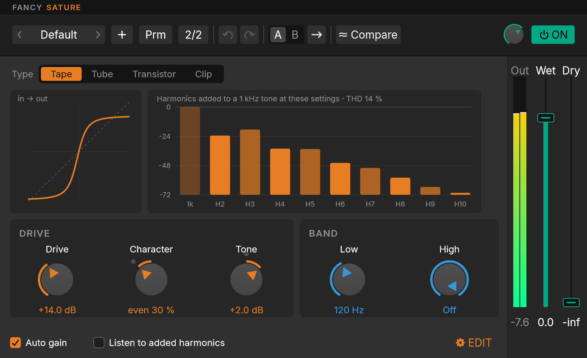
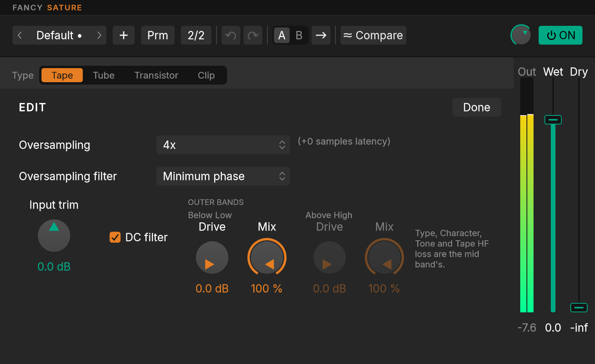

Fancy Sature: Phase 4 Wave 2 mockup (curve shaping, Diode and Fold, cuts, spread, Mid/Side)
docs/sature.md, Phase 4 Wave 2: items 35 to 39, Decisions 1 to 3 A: Offset only (no Knee), Spread 0 to 50 %. New things in dashed yellow, on the plugin's real screenshot (1x coordinates).
1 · The main window: Diode and Fold in the Type switch
Diode (even and odd harmonics, a rectified buzz) and Fold (past the ceiling the wave folds back: metallic, synth-like) are added after Clip. The switch has room for six in its row.

Tape
Tube
Transistor
Clip
Diode
Fold
The curve and the harmonic bars show the chosen Type, as they do now. Both new curves use ADAA, as the others do. Existing Types sound as today, to the bit.
2 · The EDIT drawer, page Shape
The drawer gets two pages, Shape | Tone and stereo, beside its title, as Comp's drawer has. Shape keeps today's contents and adds Offset (−0.5 to +0.5, 0 by default) under Input trim.

Tape
Tube
Transistor
Clip
Diode
Fold
Bias before the curve:
even harmonics,
the 2nd first.
At Offset 0.25 on Tape, H2 rises to about −21 dB while H3 stays put. The DC it adds is filtered out after the curve.
3 · The EDIT drawer, page Tone and stereo
Low cut and High cut (Off, or 20 Hz to 20 kHz; 12 or 24 dB/oct; Pre or Post), Spread (0 to 50 %) and Channels (Stereo, Mid only, Side only).
Tape
Tube
Transistor
Clip
Diode
Fold
LOW CUT
Slope
24 dB/oct
HIGH CUT
Slope
12 dB/oct
Pre shapes what's driven: a Low cut before the curve stops a heavy bass from muddying everything above it. Post shapes what's heard. Off (the default) isn't run.
STEREO
Widens only the added harmonics; the fundamental stays centred. 0 to 50 %, so mono keeps them (−3 dB at most).
Channels
Mid only
Stereo (today), Mid only or Side only.
Every new setting defaults to today's sound, to the bit: cuts Off, Spread 0, Channels Stereo.